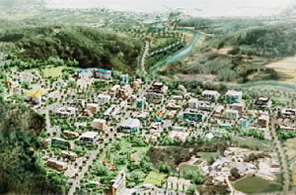

未来战略产业及新增长产业
- Home
- 战略产业
- 未来战略产业及新增长产业
概要
釜山为了实现可持续发展，努力挖掘新增长动力，加强融合产业竞争力。在IT、造船、海洋、生物、机器人、绿色、能源产业等未来战略产业领域积极开展多种的项目。
-

组建东南地区放射线医科学产业园区
-
组建海上风力园区
-
 世界最高级的海底石油钻探船
世界最高级的海底石油钻探船
培育产业
I加强IT全球竞争力
培育云计算/物联网产业
- 建立云计算数据中心试点园区(美音地区)及流通基础(2014年~2018年) – 建立BS金融集团综合电算中心(两栋楼，1,902亿韩元)，开工(2015年8月)
- 指定云计算集群(2015年)：美音(站台)，石坮~Centum(服务地区)
- 建立尖端物联网实证园区(2015年~2017年)：建立物联网试验平台(2015年)
- ITU扶持事业：吸引ITU大学、建立ITU Youth中心
优化釜山的增长动力造船·海洋事业
组建造船·海洋Plant事业
- 营造海洋ICT融合商务带（Business Belt）(2016~2020年)
- 建立IoT(物联网)融合产业发展基础
- 建立深海海洋工程水族馆、打下Offshore Plant高级技术研究基础、建立Offshore Plant器材研发中心、建立造船器材性能高度化基础、推进形
- 成Offshore Plant工程集群、造船Offshore Plant全球核心中心
- 培育Offshore Plant专门人力、进行Offshore Plant工作人员安全教育等
- 建立釜山新港港口后方园区66万平方米园区，并吸引相关企业(2014~2017年)，制作Offshore Plant器材及模块、流通器材等
通过釜山独有的战略事业创造工作岗位
建立IT融合产业基础
- 形成尖端IT融合产业集成化园区(2011年~2015年)
- 批准吸引并设立ETRI(韩国电子通信研究院)釜山分院(2015年7月)
培育放射线医学、科学产业
- 组成放射线医学·科学产业园区(2010年~2015年)，开发医疗用重粒子加速器(2010年~2017年)：治疗中心竣工(2015年11月)
- 建设出口用新型研究用反应堆(2010年~2018年)：结束整理场地工程(2015年4月)、打下放射性同位元素融合研究基础(2015年~2019年)
- 设立核能设施拆卸技术综合研究中心（2016年~2019年）
- 支持癌症专门研究中心、临床设施全球先导中心等医疗产业
- 建立抗老化产业基础设施并支持开发产品
培育鞋子、纤维产业
- 凭借优秀功能及性能，通过科学验证，得到顾客信赖，将釜山鞋子产业培育成世界级名牌产业
- 推进海洋融合材料产业化事业等，抢占全球市场
培育机器人产业及绿色·能源产业
- 建立海洋机器人研究据点中心(2011年~2016年)
- 营造与地区产业链接的项目企划等机器人融合生态环境(2015年)
- 开展新可再生能源地区支援事业(18个)、营造海上风力发电园区(2013年~2017年)
- 建设生物热电联发电厂(2015年~2017年)